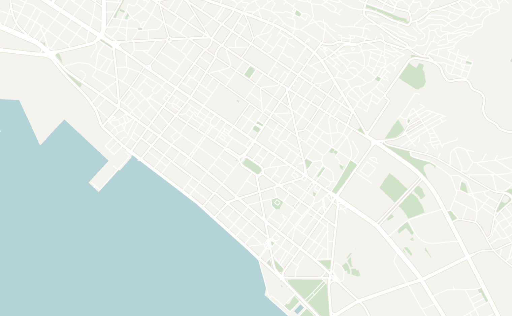
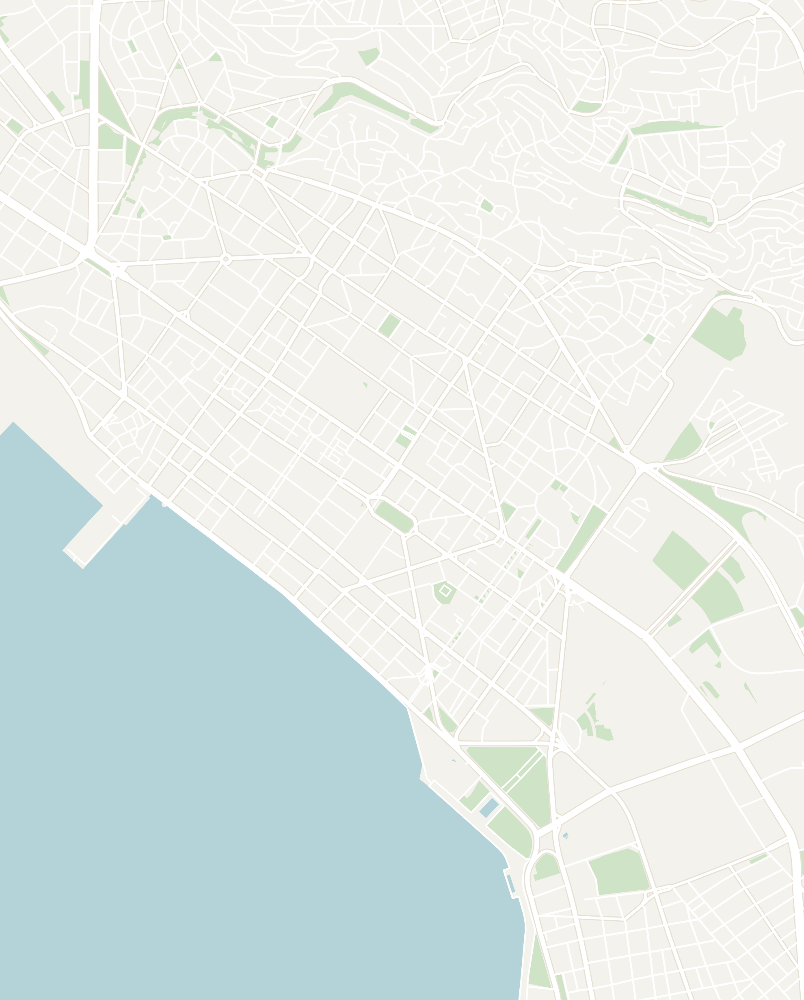
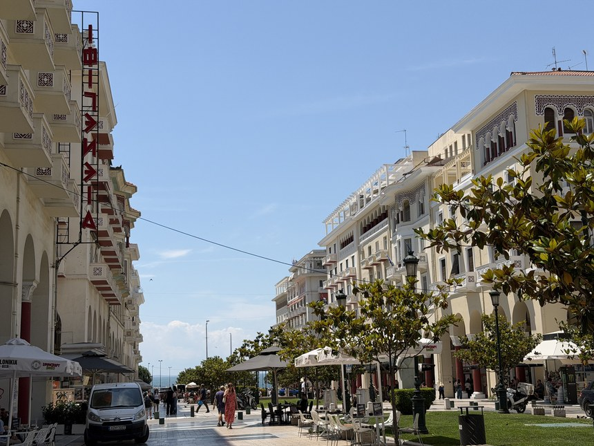
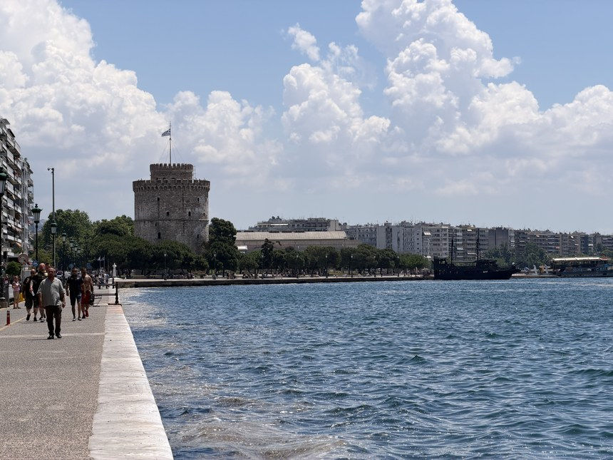
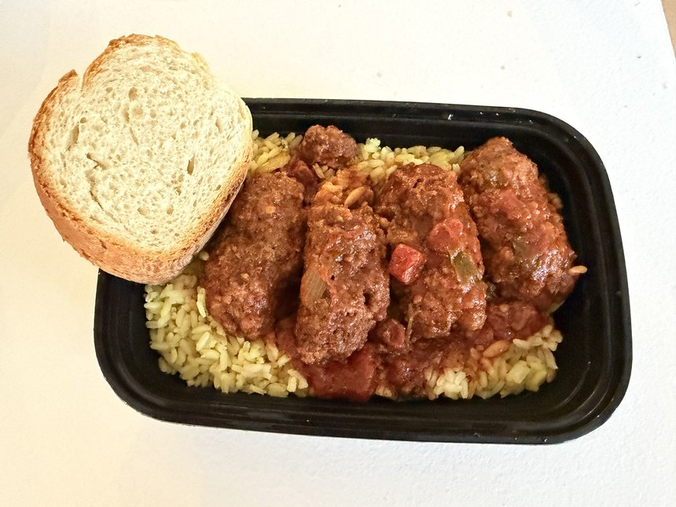

If you truly want to understand modern Greek culture and society, you'll need to venture into the mainland and explore some of its cities, and Thessaloniki is the perfect place to start.
Located in the northern Greek region of Macedonia, Thessaloniki is Greece's second-largest city and home to 1.6 million people. Compared to Athens, which dates back to Ancient Greece, Thessaloniki's roots are in more recent history, with heavy influence from the Roman, Byzantine and Ottoman empires. Walk around the city and you'll notice a pattern: blocks of 8-story apartment buildings, then suddenly a small square with Roman ruins or a Byzantine church sitting in the middle of it.
A small disclaimer: If you've been to any popular tourist destination in Europe, Thessaloniki will not wow you with its architecture and beauty. It is a real city where Greeks actually live rather than a touristy one, so you're getting the real version of Greece, not the curated tourist version. Set your expectations accordingly, and you'll enjoy the city for what it really is. The best way to take it all in is to wander with no plan, and you'll find a side of Greece beyond the ancient temples and honeymoon islands.
That said, I wouldn't plan a whole trip around Thessaloniki. However, it makes for a great stop for 1 to 2 days. Thessaloniki is an easy way to break up the trip since the city serves as a gateway to other destinations in northern Greece, such as Meteora, Metsovo or Chalkidiki. If you're looking for more resources to plan your trip, check out my Greece field notes.
Getting to Thessaloniki
Thessaloniki is the main city in northern Greece and the natural first stop if you're coming overland from North Macedonia (which is how I arrived). As the second-largest city in Greece, Thessaloniki is easy to reach. Here are the main ways to get there:
- Flights — Thessaloniki Airport is the country's third-largest airport. It is well connected by flights from all over Europe. Flying into Thessaloniki may be one of the cheaper ways to visit Greece as it is a less popular tourist destination. There are also frequent domestic flights from Athens.
- Bus from Athens — intercity buses (KTEL) run to Thessaloniki from the Kifissos bus terminal in Athens. The ride takes about 6 hours and it is the cheaper option if you don't want to fly or take the train. Book your tickets here.
- Bus from Meteora — the bus from Kastraki and Kalambaka takes 3 to 4 hours with a change in Trikala. You need a paper ticket, so purchase and print it at the station.
- Coming from North Macedonia — Greece and North Macedonia have had tense relations over a strange naming dispute (more on that in my North Macedonia article), making the journey a bit complicated...
- The best place to start the journey is the city of Bitola, North Macedonia, located just about 15km from the border. You'll then need to book a taxi or private transfer from Bitola to Florina. I booked it through my Airbnb for 40€. The ride was only 45 minutes and the border crossing was easy: they just took my fingerprints.
- You'll then arrive in Florina, a small town just over the Greek border. From there, the bus to Thessaloniki takes 3.5 hours. Find tickets online at the KTEL website.
- Pro tip — keep your passport ready! Two plain-clothes police officers stopped me for my documents the minute I got off the bus. Greece is a major entry point into the EU, so ID checks on anyone who looks foreign are routine, and it is an easy 2-minute conversation.
How to Get Around
The city is extremely walkable and almost all of the sights are within walking distance of each other. Here are some other transportation options for longer distances:
- City bus — the bus system is extremely well connected and easy to figure out. Every route and schedule is in Google Maps. You'll just need to keep track of the stop names in Greek characters!
- If you're arriving by bus from another city, the intercity bus station sits just outside the center, and a city bus runs from there into downtown.
- Ridesharing — Uber works in Thessaloniki and rides are relatively affordable. A 15-minute ride from the center to the intercity bus station cost me 8€.
- Metro — Thessaloniki also has a metro system. I didn't need to ride it, but the Hagia Sophia station has ancient ruins inside it!
Thessaloniki — The City Itself
Thessaloniki was never really an ancient Greek city the way Athens was. It peaked under the Byzantine and later the Ottoman empires, and the city you see today was shaped by a huge fire in 1917 that burned down most of the historic center. That is why almost every building is modern and the churches that survived are the main remnants of the old city. Here are the best activities to fill 48 hours in Thessaloniki:


Double-tap to open in Google Maps
Wander around Thessaloniki
It is silly to say, but it took until my second trip to Greece to understand that modern Greece is not just ancient Greece or the idyllic resort islands for honeymoons. Thessaloniki really broke the mold of what I thought of as Greek.
Aimlessly wandering the city was the best way to see what daily life in Greece is actually like, and to notice the layers of history tucked between the apartment blocks. Everything, down to the architecture, was different from what I had seen in Athens or pictured in my head.

I spent a full day stopping by local cafes and bakeries, just taking in the city, and I highly encourage you to do the same. The city sees a fraction of the tourists the rest of the country does, and Greek people are some of the friendliest on the planet: happy to strike up a conversation and welcome you to their country.
Platia Aristotelous & the Waterfront

A good place to begin your exploration is Platia Aristotelous, the main walking street in Thessaloniki. It is lined with gardens and grand arcaded buildings that mix Parisian-style architecture with Byzantine-inspired arches. Platia Aristotelous is home to some of the best restaurants and cafes in the city. It is a great place to grab a coffee and spend a slow morning.
Aristotle, who was born just down the coast in Chalkidiki, sits in bronze on the square. The walking street ends at the waterfront where you'll see the iconic White Tower and big touristy pirate ships cruising up and down the coast (and likely loaded with drunk European tourists). The promenade runs for miles along the bay, and on a clear day you can see Mount Olympus across the water.
The White Tower

The White Tower is the symbol of Thessaloniki and the best thing to do in the city. It is a tall white castle-like watchtower right on the waterfront that you can't miss. The inside has been turned into a museum, documenting the city's history all the way up to the present day.
The Ottomans built the White Tower in the 15th century as part of the city walls, and it later served as a prison with a reputation grim enough to earn it the nickname Tower of Blood. It only became the White Tower in the 1890s, when it was whitewashed, and the story goes that a prisoner did the painting in exchange for his freedom.
Every floor covers a different side of the city's history: the centuries of Byzantine rule, the Ottoman era, the large Jewish community that once lived here and the modern city. What stood out to me was how much the exhibits celebrate the mix of cultures that built Thessaloniki (Greeks, Ottomans and the Sephardic Jews who arrived from Spain in the 1490s) instead of telling it as centuries of "Turkish domination." Everything inside is labeled in Greek, so get the English audio guide. This is where I learned the most about Thessaloniki by far, and the climb ends on a roof with a nice view over the boulevards and the sea.
The Byzantine Churches
Thessaloniki holds onto far more of its Byzantine past than its ancient Greek one. There are more than a dozen Byzantine-era Greek Orthodox churches scattered across the city, but the main two to see are the Hagia Sophia of Thessaloniki and the Holy Church of St. Demetrius.
Greek Orthodox churches are covered in gold mosaics, paintings of saints and silver icons with only the face painted in. Both are active churches, and you'll notice that Greeks are very religious. People make the sign of the cross every time they walk past a church and even kiss the icons while they pray, so dress and take photographs respectfully.
Modeled after the famous Hagia Sophia in Istanbul, the Hagia Sophia of Thessaloniki was built in the 8th century as a smaller take on the same idea, with a big dome at its center. Under the Ottomans, it was converted into a mosque, then back into a church in 1912, when the city became part of Greece. Look up at the dome for its mosaic of the Ascension, which goes back to the 9th century.

The next stop is the Holy Church of St. Demetrius, which belongs to the city's patron saint, Demetrius, a Roman officer who was killed in Thessaloniki around 306 AD for being a Christian. The church stands where he was held, in an old Roman bathhouse, and you can walk down into the crypt underneath to see what's left of it.
The Roman Ruins
A few blocks east of the Hagia Sophia is the Arch of Galerius, the most impressive Roman ruin in the city. What's left are its marble pillars, covered in intricate carvings of soldiers marching, cavalry charging and the Emperor Galerius himself riding into battle.
What's so unique about Thessaloniki is that its ancient sites are surrounded on all sides by modern apartment buildings. Locals walk past them without a second glance, and the Arch of Galerius is actually a popular meeting point.

Right behind the arch are the Palace of Galerius, a big field of ruins where he lived, and the Rotonda, built as his mausoleum. The Rotonda is the perfect encapsulation of how Thessaloniki changed under different empires: it started as a mausoleum, then became a church, then a mosque under the Ottomans and finally a church again.
Visit a Traditional Greek Market
Thessaloniki is home to many traditional open-air markets where locals still do their grocery shopping today. Visiting one of them is the best way to see daily life in Thessaloniki. Unlike the Monastiraki market in Athens, where most of the stalls sell souvenirs, these markets are full of locals buying ingredients for dinner, and you'll see far fewer tourists.

The main market in Thessaloniki is Kapani Market, an open-air market in the middle of town that felt very authentically Greek. The market has been active for over a century (since Ottoman times), and the name comes from the Turkish word for the public scale that goods were weighed on. The stalls sell fish on ice and fresh produce, and the butchers have goat heads out on the counter. Go even if you're not buying any produce.
A few blocks east, toward the Hagia Sophia, the lanes around Athonos Square are a smaller version of the same thing: cobbled alleys shaded by canvas awnings, with produce stalls, spice and herb shops and stores selling baskets and wooden kitchenware. The same alleys are packed with little tavernas, so it is also a good place to come back to for dinner. For a more polished take, the restored 1920s hall of Modiano Market is a couple of blocks from Platia Aristotelous.
Where to Eat
Greek cuisine is one of my favorites in the world. It's built around grilled meats, fresh seafood and dishes full of olive oil, lemon and herbs. Thessaloniki is home to some of the best restaurants in the country and was named a UNESCO City of Gastronomy in 2021.
You'll also find that the food here is noticeably more authentic and cheaper than on the islands, since most restaurants cater to Greeks instead of tourists. For what to order, see the food section of my Greece field notes.

Τα μικρά Καλύβια — a homestyle canteen run by a mother and her two sons. Everything is cooked in advance and laid out along a counter, so you just point at what you want. The workers were extremely friendly and recommended the meatballs in tomato sauce with rice. The food was incredible and the whole meal came to 4.5€!


Greek Bakeries — I stopped at a bakery at least once a day while I was traveling around Greece! There is one on almost every block and they make a solid snack between sights. Greek bakeries typically offer a few varieties of spanakopita, a flaky spinach and feta pastry, which are very filling.
I highly recommend stopping at Stratos Bakery & Pastry Shop, a few steps from the Arch of Galerius, and Yellow The Bakerist, near Platia Aristotelous. Both were conveniently located for sightseeing and offered a great variety of pastries.
Where to Stay
The main sights of Thessaloniki are all within walking distance of each other. I would recommend staying central, ideally within a few blocks of the Hagia Sophia or Platia Aristotelous, so you can walk to everything in this guide. Accommodation was very reasonably priced in Thessaloniki, one of the perks of fewer tourists.
I stayed in this Airbnb, managed by SKG Stories, a block from the Hagia Sophia, on the top floor of an 8-story building. It was a cozy studio and the nicest place I'd stayed on my trip so far: spotless, with a private balcony and internet fast enough to work from. Nothing here is more than a 15-minute walk from the Hagia Sophia, and once I checked in, I didn't need a bus or a taxi until it was time to leave.
That's a wrap on Thessaloniki. Next up is Meteora, 3 to 4 hours away by bus, and the rest of my trip through Greece is in my Greece field notes.